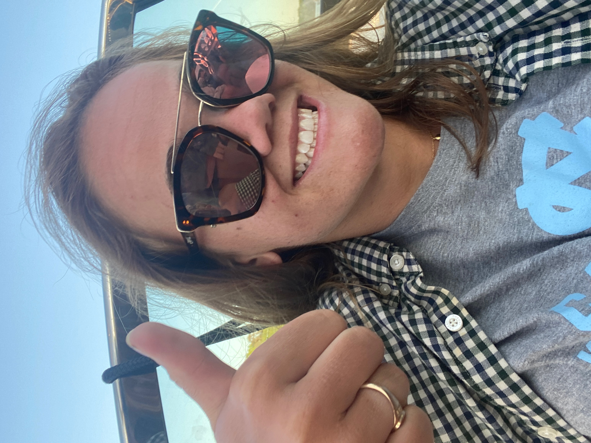
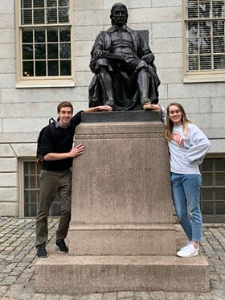
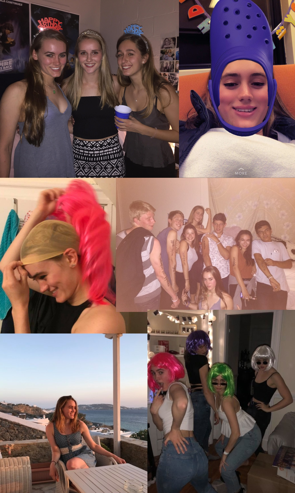
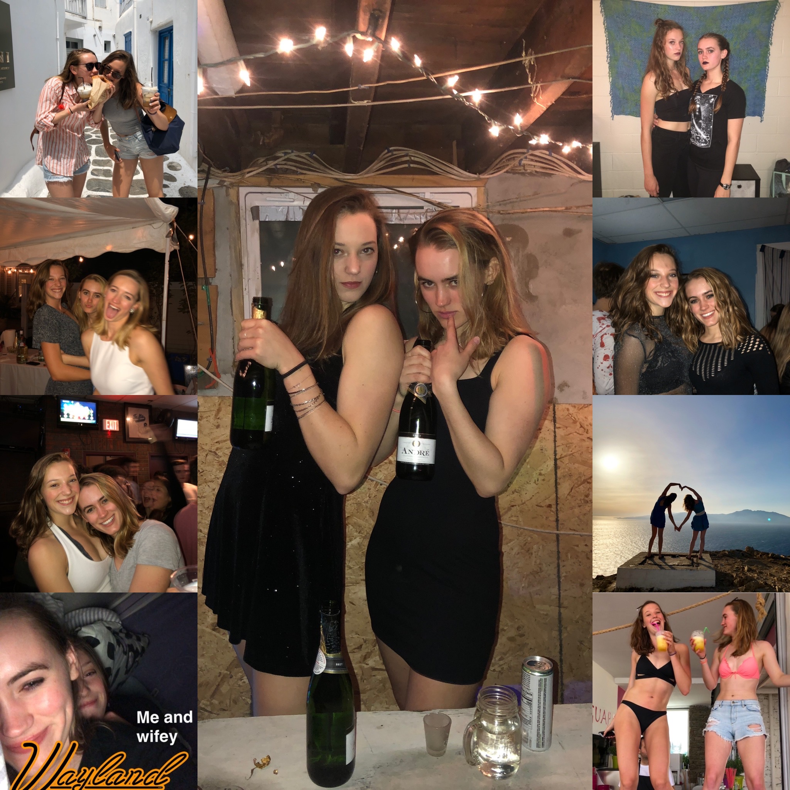
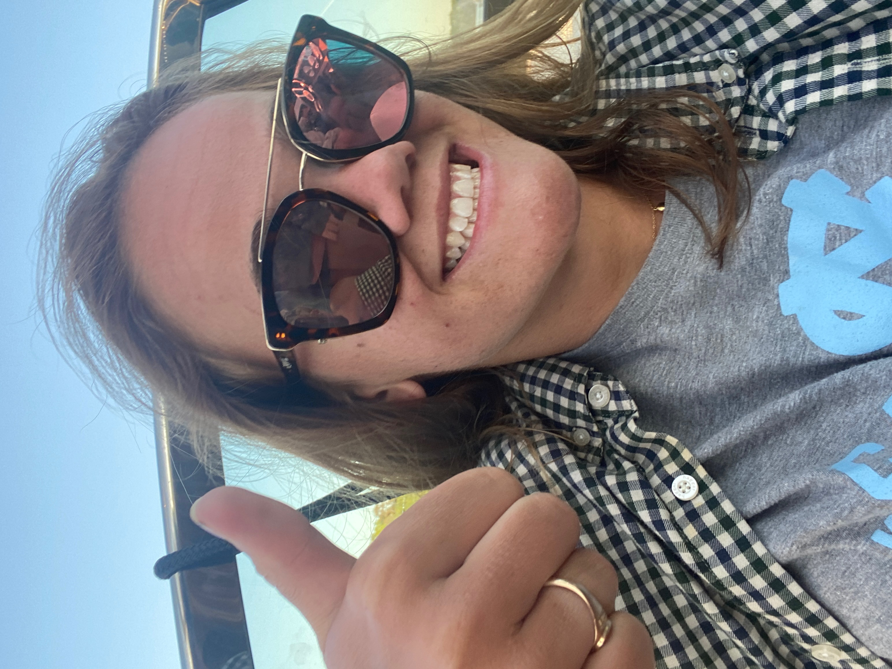

×


Hbd Paige miss your face -
Stay safe n let’s have a picnic six feet apart soon plz

Hi Paige this is Michael from April 24th. Not to confuse you with Michael of now. Ahhh time what a beautiful thing it is. I have and do appreciate u very much as a friend Paige and geting to see you grow into a full blown college educated woman has been beautiful. I am so glad to have been freinds with you all of college. You have the voice of an angel. I am wishing you the biggest 21st homie. Plase pop off so hard with Shelby
dearest paigey,
happy BIRTHDAY babyyyyy! though i wish i could be there to make u rip the bong 21 times for ur 21st, i hope you have a birthday that’s fun and lovely and incredible like u!! i will always appreciate your jokes (lil sav), our movie discussions (nemo > how to train ur dragon), and every time we’ve gotten to sing (and do some lit perc) together. thank u for always being a friend <3 here’s to hoping winky, dash, or shelby ices you today and you put on ur cutest millennial pink top and jam out to white houses (jills version obvi).
love and miss u bb!! happy 21st!!
love, lan
happy BIRTHDAY babyyyyy! though i wish i could be there to make u rip the bong 21 times for ur 21st, i hope you have a birthday that’s fun and lovely and incredible like u!! i will always appreciate your jokes (lil sav), our movie discussions (nemo > how to train ur dragon), and every time we’ve gotten to sing (and do some lit perc) together. thank u for always being a friend <3 here’s to hoping winky, dash, or shelby ices you today and you put on ur cutest millennial pink top and jam out to white houses (jills version obvi).
love and miss u bb!! happy 21st!!
love, lan
Happy birthday, Paige!!
Incredibly thankful I met you this spring. Here’s to many more long dinners and chats :) LOVE and miss you very much. Can’t wait to see you and celebrate with you someday soon!
Love,
MC
Incredibly thankful I met you this spring. Here’s to many more long dinners and chats :) LOVE and miss you very much. Can’t wait to see you and celebrate with you someday soon!
Love,
MC
Happy birthday Paige!
You are one of the craziest, strongest, most generous people I know, and I am so lucky to have u in my life. Thank you for making the Jills such a wonderful experience for me—it really would NOT be the same without you. I miss our romantic walks home together, and I can’t wait to see you.
So so SO much love ❤
Have a wonderful day bb!!
You are one of the craziest, strongest, most generous people I know, and I am so lucky to have u in my life. Thank you for making the Jills such a wonderful experience for me—it really would NOT be the same without you. I miss our romantic walks home together, and I can’t wait to see you.
So so SO much love ❤
Have a wonderful day bb!!
Hbd Paige miss your face -
Stay safe n let’s have a picnic six feet apart soon plz

Pagine!! I can’t believe you’re 21!! Cheers to legally smoking that good stuff 😎🤑
and serving looks in the club 😉 I hope you have some cake today that’s as good as
that iconic chocolate cake freshman year 🙂 I’m missing you, your jokes, and our
hillside boys sing alongs in quarantine rn 😞 You impress me everyday with your
confidence and ofc your ability to destroy a man with one sentence 😵 I miss our TJ
runs and endless wig activities 🙂 you are an absolute legend and I’m so happy you
became one of my first friends (and wilder sisters !!) 🙂 Please enjoy these hand-picked
gems from my camera roll. Have a great day my sweet pagine and dream of Rhys tonight 😉
(we’ll talk about him in private ;)))
- Your hef ❤️
- Your hef ❤️

dearest pagina, from our day 1 glory days (pretty sure goth is our look) to
turning teele basement into clurbb teele on the day tufts turned into harry
potter and the chamber of secrets, I just can’t express how grateful I am to
do college with you by my side lady 💛 I love your humor, your incredible voice
(seriously i miss it so much i listen to my recording of good kisser too often
i need new content send me a recording😏?) I love our honeymoon getaways to
wayland and bumping to mamma mia in the prius. I love you to mykonos and
paris and russia (to get an authentic spominay performance ofc) and back.
you’ll forEVER be my hillside boy, my wife, and the english muffin breakfast
sandwich to my latte. happy birthday lover, see you at barcelona wine bar for
the real celebration when this is all over;)

Greeting Paige. Lets take a journey.
To my very best friend in the whole wide world, to the bestest friend there ever was, happy birthday. Almost five years ago, you walked into Ms. Yao’s physics 400 class, sat down next to me, and my life has never been the same. From bonding over She’s The Man (I still have your candy grams you sent me signed Duke Orsena), to convincing me to take Russian, to all of our Sunday night commons dinners (when I got ice cream AND milk, i love milk more “than any other animal by product), you have been the best friend I could have asked for, and a far better friend than I deserve. You put up with me freaking out over my inability to understand calc, you got me through Nana’s death, and my last basketball game ever. I love you more than you know, and I am so proud to call you my best friend. You are full of grace and poise, of love and laughter. You are intelligent and kind when people deserve it, and sassy when they don’t. You are loved by so many people, BUT NONE MORE THAN ME. I am so proud of you. I am so thankful for you. I am thankful for you calling me and yelling MERHHHH. For our den dates where we would eat ice cream and judge people. For our many trips to Asheville (ASHEVILLE WILL NEVER BE THE SAME) and Quichi and most importantly my favorite place in the world, Wayland.
Word cannot express how much I love you, and how in awe I am that this beautiful, intelligent, charismatic lady let me be her best friend, but all I can do is say thank you for loving me, and putting up with my craziness.
Love you love you
MERHHHHHH
Can’t wait to live together and raise dauchaunds to run in a V formation
❤️ Casey
To my very best friend in the whole wide world, to the bestest friend there ever was, happy birthday. Almost five years ago, you walked into Ms. Yao’s physics 400 class, sat down next to me, and my life has never been the same. From bonding over She’s The Man (I still have your candy grams you sent me signed Duke Orsena), to convincing me to take Russian, to all of our Sunday night commons dinners (when I got ice cream AND milk, i love milk more “than any other animal by product), you have been the best friend I could have asked for, and a far better friend than I deserve. You put up with me freaking out over my inability to understand calc, you got me through Nana’s death, and my last basketball game ever. I love you more than you know, and I am so proud to call you my best friend. You are full of grace and poise, of love and laughter. You are intelligent and kind when people deserve it, and sassy when they don’t. You are loved by so many people, BUT NONE MORE THAN ME. I am so proud of you. I am so thankful for you. I am thankful for you calling me and yelling MERHHHH. For our den dates where we would eat ice cream and judge people. For our many trips to Asheville (ASHEVILLE WILL NEVER BE THE SAME) and Quichi and most importantly my favorite place in the world, Wayland.
Word cannot express how much I love you, and how in awe I am that this beautiful, intelligent, charismatic lady let me be her best friend, but all I can do is say thank you for loving me, and putting up with my craziness.
Love you love you
MERHHHHHH
Can’t wait to live together and raise dauchaunds to run in a V formation
❤️ Casey

Hi Paige this is Michael from April 24th. Not to confuse you with Michael of now. Ahhh time what a beautiful thing it is. I have and do appreciate u very much as a friend Paige and geting to see you grow into a full blown college educated woman has been beautiful. I am so glad to have been freinds with you all of college. You have the voice of an angel. I am wishing you the biggest 21st homie. Plase pop off so hard with Shelby